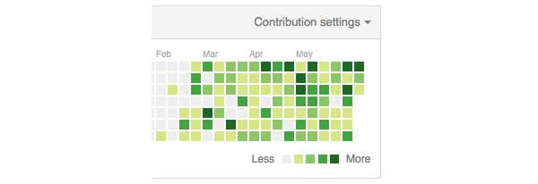

Três meses se passaram desde que decidi começar a escrever código todo dia. O intuito inicial havia sido melhorar minhas habilidades em HTML, CSS e JS, mas como todo e qualquer projeto que se preze, este também evoluiu, e teve seu propósito inicial um pouco modificado.

Não mudei a regra do jogo com o campeonato iniciado, apenas fiz um adendo que veio contribuir muito para o processo não ficar engessado.
Apareceram jobs no meio do caminho, novos projetos, e nem sempre eu escrevia código. Havia prótotipos, desenhos da interface, enfim, um monte de outras coisas a se fazer que muitas vezes não envolviam código.
Enfim, decidi que os commits seriam com código, ou com algum outro tipo de processo, contanto que fosse diário, respeitando as outras resoluções das regras impostas por mim mesmo. Ainda me comprometi a explicar todo dia no log do projeto o que estava sendo feito, independente do projeto em que eu estivesse trabalhando.
Houve dias que não deu pra fazer o push para o repositório, mas o mais importante é que o trabalho diário estava sendo feito, sempre respeitando, às vezes até a contragosto, a folga semanal.
Evolução
Apesar de eu ter muita coisa pra elencar sobre esse aprendizado no primeiro semestre, nada chegou perto do que estudei sobre CSS.
Foi fantástico essa experiência de brincar com animações e conhecer um pouco do verdadeiro poder das CSS. Um agradecimento aqui ao Afonso Pacifer cuja série de posts foi a mola propulsora pra que eu estudasse mais sobre o assunto.
Também aprendi Jade (que relutava um pouco em mexer), Sass e no momento estou aprendendo a mexer com o Gulp. Como tenho um conhecimento prévio em Grunt, tá sendo mais simples de assimilar como trabalhar com ele.
Embora seja mais simples do que o Grunt, ainda não sei se vou incorporá-lo ao meu workflow.
Os próximos três meses
Aqui vai uma listinha do que espero conseguir nos próximos três meses:
- Consolidar meu conhecimento nas novas features do CSS, aplicando em projetos que venho trabalhando
- Ter mais experiência com os automatizadores e poder escolher meu favorito.
- Aprender o Lost, pra que eu saia da minha zona de conforto com o Skeleton/ Bootstrap.
- Entrar de cabeça no Javascript
Então é isso, veremos o que o próximo trimestre reserva.